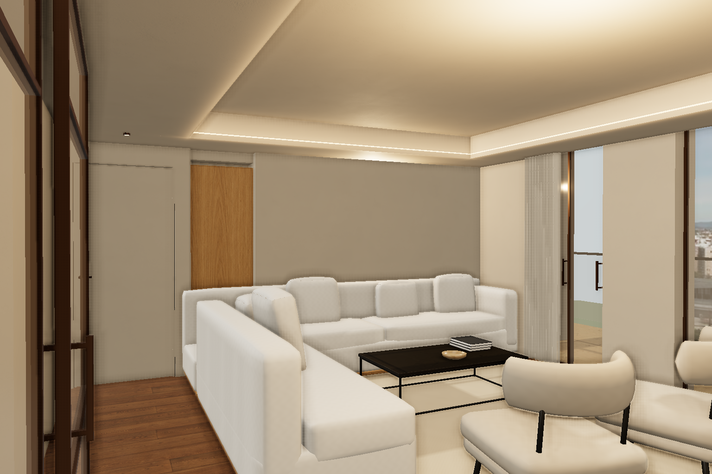
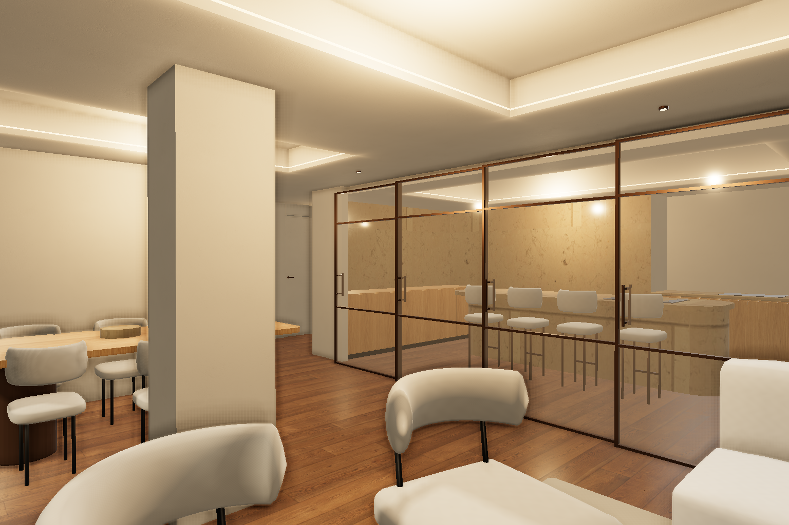

Una prueba completa del salón.
Reconstrucción del sofá y las butacas, tejidos propios y luz indirecta calculada con Blender. Las imágenes del visor son capturas reales de Chrome con WebGL en una GPU Apple M2. El antes y el después usan exactamente la misma cámara; el encuadre respecto al render del estudio es aproximado.
Referencia del estudio + comparación del navegadorQué cambia
- Sofá con asientos continuos, cojines cuadrados agrupados en la esquina y aristas suaves. Butacas con dos cojines ovalados, respaldo curvo cerrado y patas inclinadas.
- Lino y tapizado de butacas diferenciados, visillos con pliegues densos, libros con hojas y cuenco cóncavo. Panel de roble, composición gráfica original y acabado de pared en la trasera del armario que mira al salón.
- Mapa de iluminación de 2048 px calculado con Cycles, 128 muestras y seis rebotes difusos, filtrado con OpenImageDenoise. La luz de ventana, el foseado y las sombras de apoyo se conservan al moverse.
- Se mantienen la planta, los techos D02, las huellas B01, la navegación y las 17 puertas. La cocina visible y el comedor siguen usando sus modelos anteriores.
Verificación en el navegador
| Encuadre / prueba | Antes | Después |
|---|
| Cargando mediciones… |
Muestras de aproximadamente 2,2 s en las cámaras fijas, 1536 × 1024 px, escala 1. Las pruebas de movimiento usan la altura habitual de ojos de 1,69 m. Son mediciones de este Mac; no equivalen a una prueba en móvil. Datos del antes · Datos del después y del recorrido
Diferencias pendientes
- La mejora de volumen, acabados e iluminación es visible, pero el resultado sigue siendo una aproximación. El sofá y las butacas no son los modelos del estudio; faltan la confección fina, costuras y arrugas naturales del render. Quedan pequeños artefactos del atlas en algunas uniones del tapizado.
- Se ha respetado la distribución del plano: las proporciones aparentes, la relación entre huecos y algunos detalles del foseado no coinciden exactamente con la imagen de referencia. No se ha deformado la vivienda para hacer coincidir una fotografía.
- Las cortinas están recogidas para mantener el acceso a la terraza. No reproducen la cobertura completa y la transmisión de luz de las cortinas del estudio.
- Las sombras suaves del salón están precalculadas: abrir la corredera o cambiar la alternativa de cocina no recalcula sus rebotes de luz. Las puertas conservan su animación y colisión, y el resto del visor conserva sus sombras en tiempo real.
- La cocina, el comedor y sus luminarias siguen mostrando diferencias importantes con la segunda referencia. Esta prueba no extiende la reconstrucción a esas estancias.
Etapa intermedia: sustitución de geometría con la luz anterior

La geometría por sí sola seguía sin acercar suficientemente la iluminación.
Primera sustitución de las butacas, antes de la luz calculada.